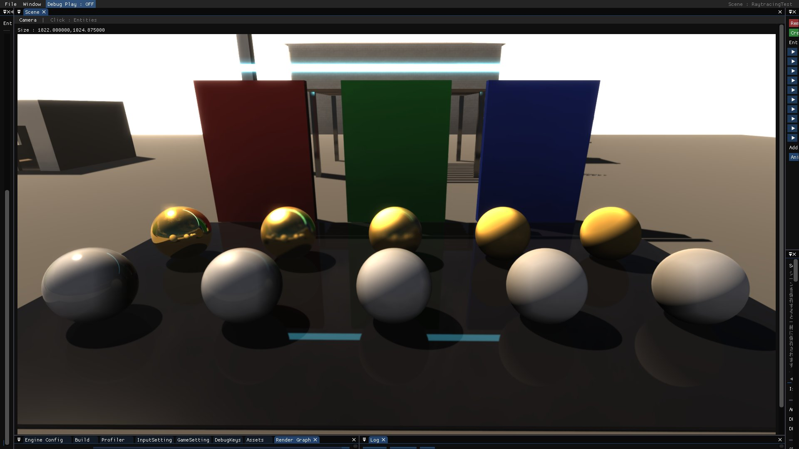
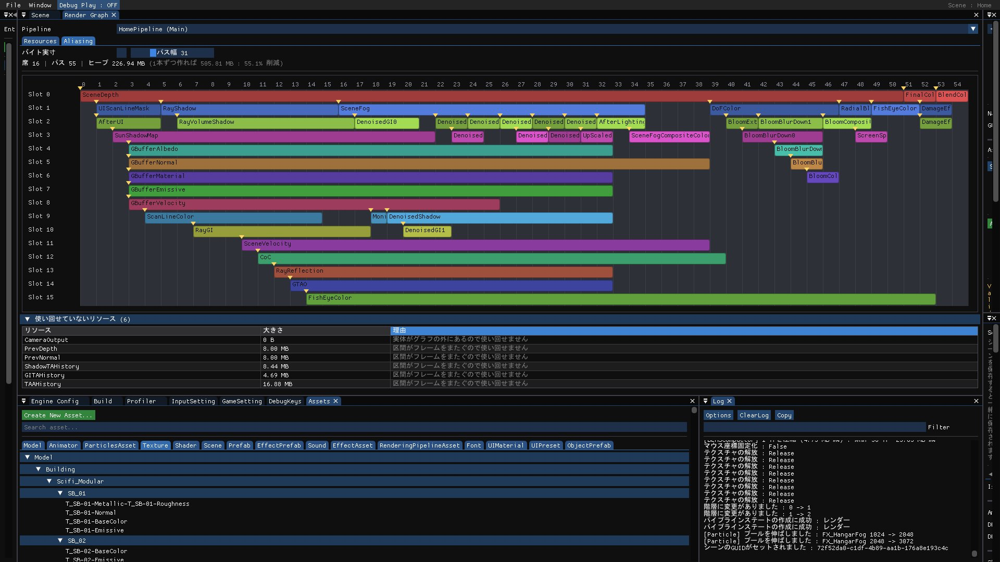

ECS
宣言を書くだけで、実行順と並列化が決まる
- 同じコンポーネントの組み合わせ(アーキタイプ)ごとに、64 KB のチャンクへ SoA で並べます。
- システムは読む型と書く型を宣言するだけで、エンジンが依存のグラフを作り、実行順を自動で決めます。
- 型がぶつかっても対象のアーキタイプが重ならなければ、待たずに並列に流します。
- 最終ボスは、最大 4,000 体のエンティティの群れでできています。
自作エンジン紹介
描画 API は DirectX 12、ゲーム内のオブジェクト管理にはアーキタイプ型の ECS、並列処理にはジョブシステムを採用しました。ゲームの表現を広げても重くならないよう、処理負荷を意識して作っています。
01
エンジンの全体像
約1年(約 966 コミット)かけて、エンジン・エディター・ゲーム(VECTOR REIGN)を個人で開発しました。エンジンは Core・Engine・Application・Editor の4層に分け、依存を一方向にしています。
1フレームでは、シーンごとの ECS をフェーズ順に回し、各フェーズの中ではシステムの読み書きの宣言から実行順を自動で決めて、ぶつからないものをジョブシステムで並列に流します。描画は、ゲーム側が積んだ描画要求をエンジンが並べ替え、カメラごとのレンダーグラフで実行します。CPU と GPU はフェンスで最大3フレームずらして並行させています。
見どころは ECS、DirectX 12 の描画、ジョブシステムの3つです。下の「主な技術」から、それぞれの詳しい説明へ進めます。物理は Jolt Physics、メッシュレットの生成は DirectXMesh、エディターの UI は ImGui を使っています。
02
エンジンで動いている様子
このエンジンで作った VECTOR REIGN のプレイ動画です。
03
気になる項目は「詳しく見る」から詳細ページへ
ECS

DirectX 12 の描画
ジョブシステム
アセット管理

全体の設計
#include はビルド時に止めます。シングルトンは MainEngine の1つだけです。04
これから改善したいこと
このエンジンで作ったゲームは VECTOR REIGN で紹介しています。